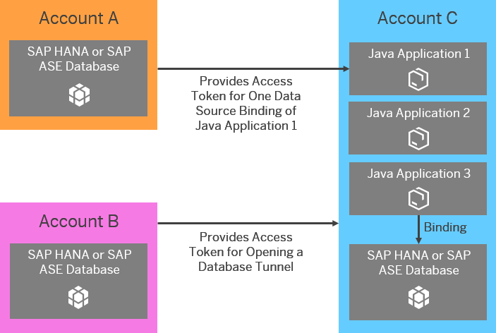
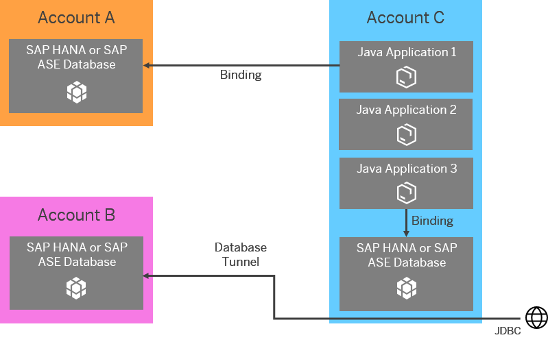

You can share a productive SAP HANA or SAP ASE database that is owned by an account with other accounts.
You can allow an account to access a database that is owned by another account by generating an access token with the console client. A member of the account requesting access to the database can use the access token to bind a Java application and/or to open a tunnel to the database in question.
The access token uniquely identifies the access permission based on the following:
The following applies for an access token:
The table below lists the tasks and the person responsible for sharing databases with other accounts:
|
Task |
Responsible |
Commands used |
|---|---|---|
| Giving Applications in Other Accounts Permission to Access a Database |
Administrator in the account that owns the database |
grant-schema-access |
| Revoking Database Access Permissions for Applications in Other Accounts |
Administrator in the account that owns the database |
revoke-schema-access |
| Giving Other Accounts Permission to Open a Database Tunnel |
Administrator in the account that owns the database |
grant-db-tunnel-access |
| Revoking Tunnel Access to Databases for Other Accounts |
Administrator in the account that owns the database |
revoke-db-tunnel-access |
| Binding Applications to Databases in Other Accounts |
Member of the account that has requested permission to use a database owned by another account |
bind-db (for SAP HANA MDC and SAP ASE databases) bind-hana-dbms (for productive SAP HANA database systems) |
| Opening Tunnels to Databases in Other Accounts |
Member of the account that has requested permission to use a database owned by another account |
open-db-tunnel |
The picture below shows an example scenario and is followed by an explanation.
Account A, B, and C are not part of the same global account. An SAP HANA or SAP ASE database is provisioned in all three accounts. Three Java applications have been deployed in account C. Java application 3 is bound to the database in account C. To bind Java application 1 to the database in account A, a member of account C requests access permission to the database in account A for Java application 1. An administrator in account A generates a unique access token for binding Java application 1 to the database in account A. The administrator also creates a database user with appropriate roles and privileges and provides the credentials of that user together with the access token to a member of account C.
In addition, a member of account C has requested to open a tunnel to a database in account B. An administrator in account B hence generates an access token and creates a database user with the appropriate roles and privileges. The administrator provides the credentials of that user together with the access token to at least one member of account C.
As shown in the picture below, the access token provided by account A is used by a member of account C to bind Java application 1 to the database in account A. The token only applies to Java application 1, it would not be possible to bind other Java applications in account C to the database in account A. The access token provided by account B is used by a member of account C to open a tunnel to the database in account B. All members of account C can open tunnels to the database in account B if they are in possession of the access token.
